3D Printed Case CASIO DC-810 PDA
3D Models Created with SolveSpace
Here is the back of the case. It houses the PDA itself. It can be downloaded here as an obj for 3D printing, and the SolveSpace slvs file can be downloaded here.
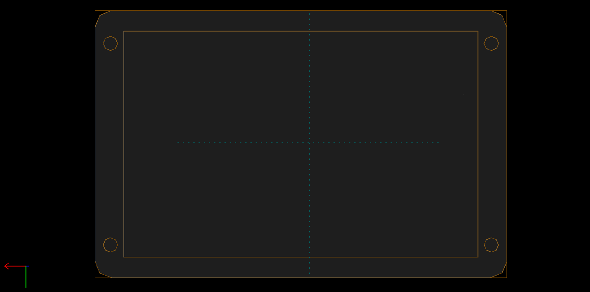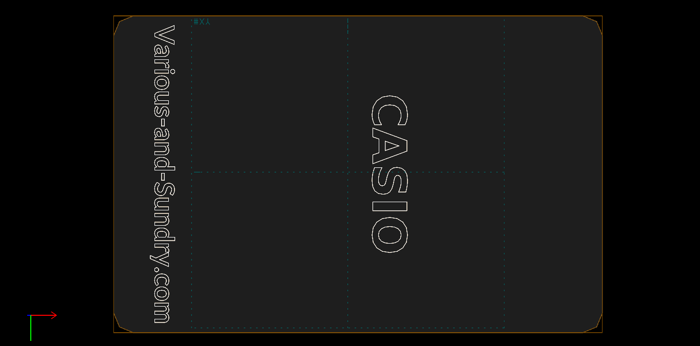
Here is the 3D model of the front face of the case. It can be downloaded as an obj here for 3D printing, and the SolveSpace slvs file can be downloaded here.
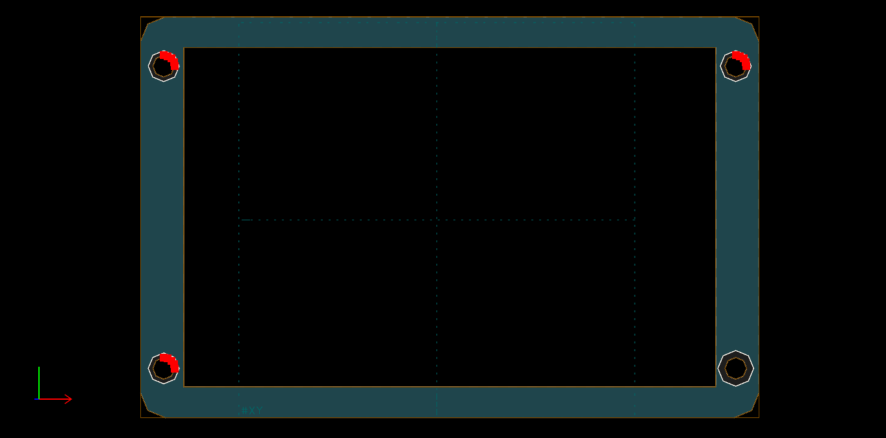Here are the front and back together.
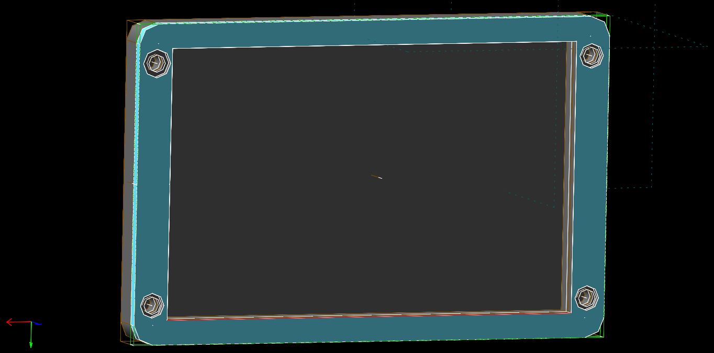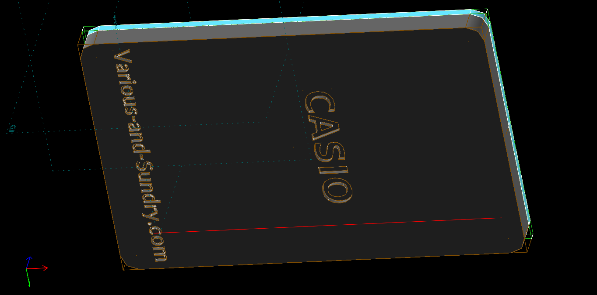
Physical 3D Printed Parts
Here is the back of the case.
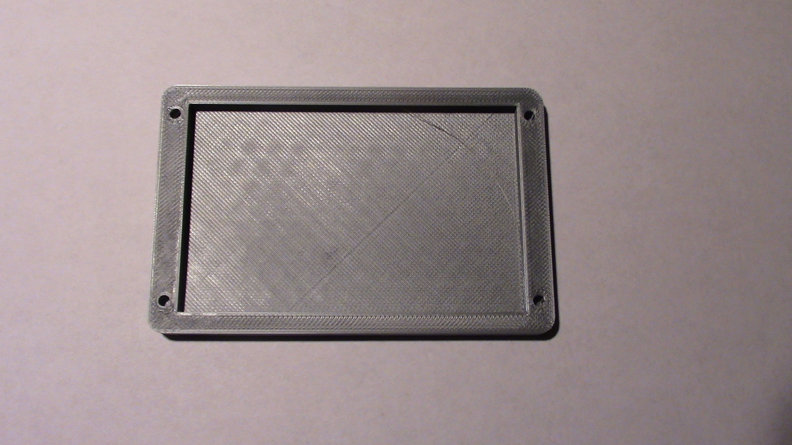The part in this picture did not print overly well, but that has nothing to do with the 3D file. It can print much cleaner.
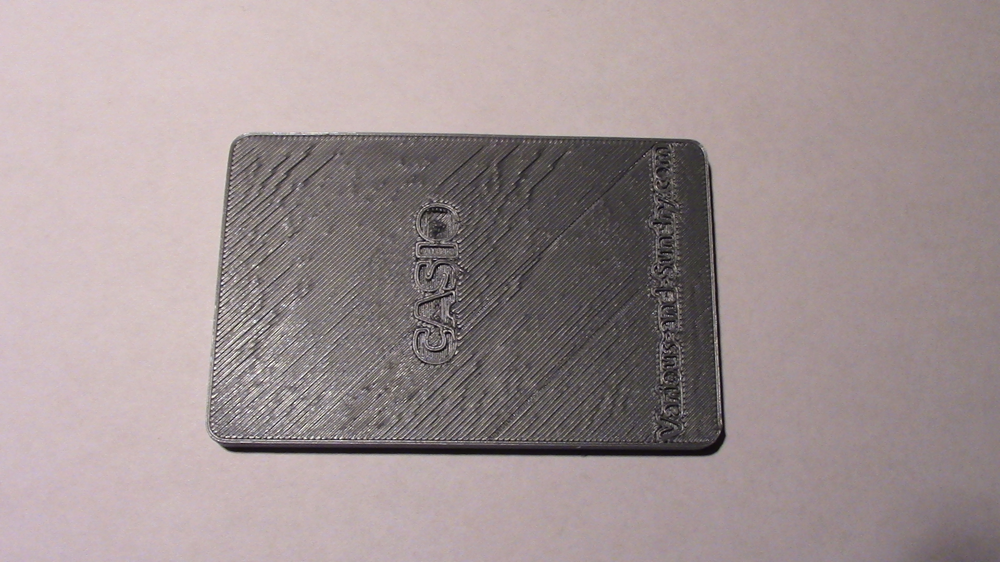Here is the front face of the case.
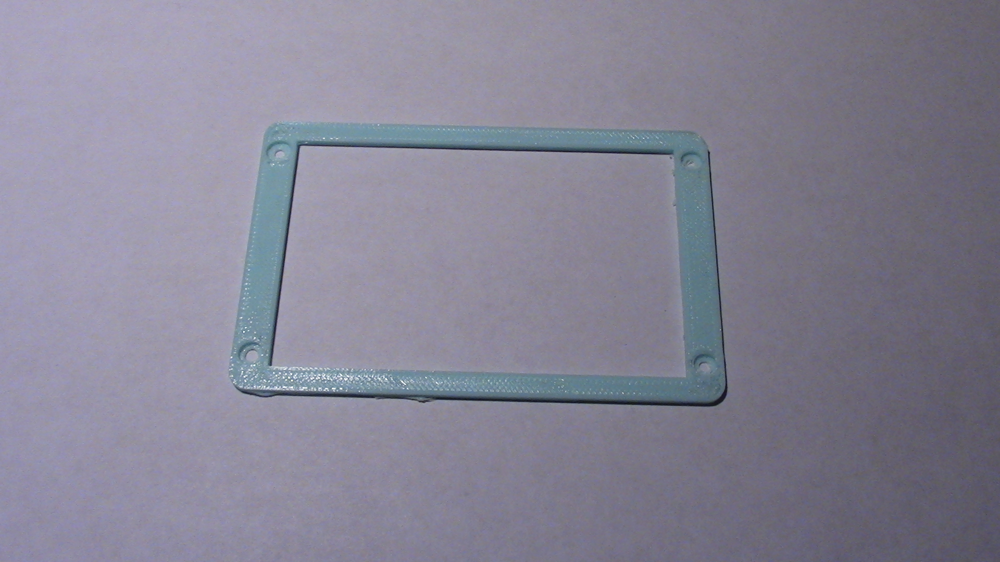Here are the front and back side-by-side.
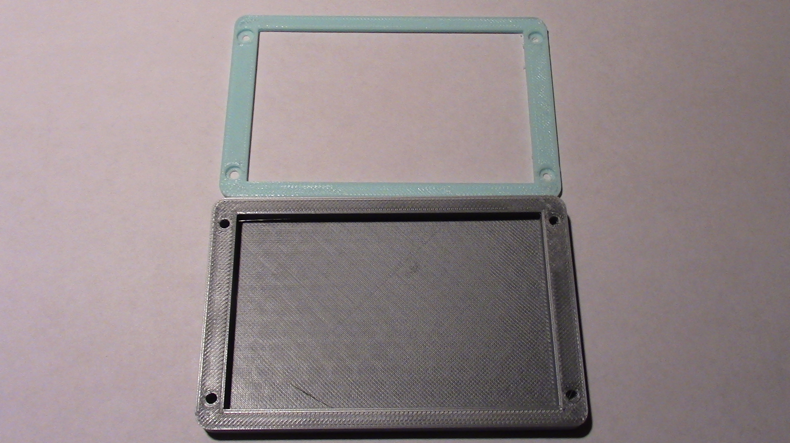A thin, clear piece of plastic is needed as a screen cover. I used a piece of plastic cut out of a plastic lid.
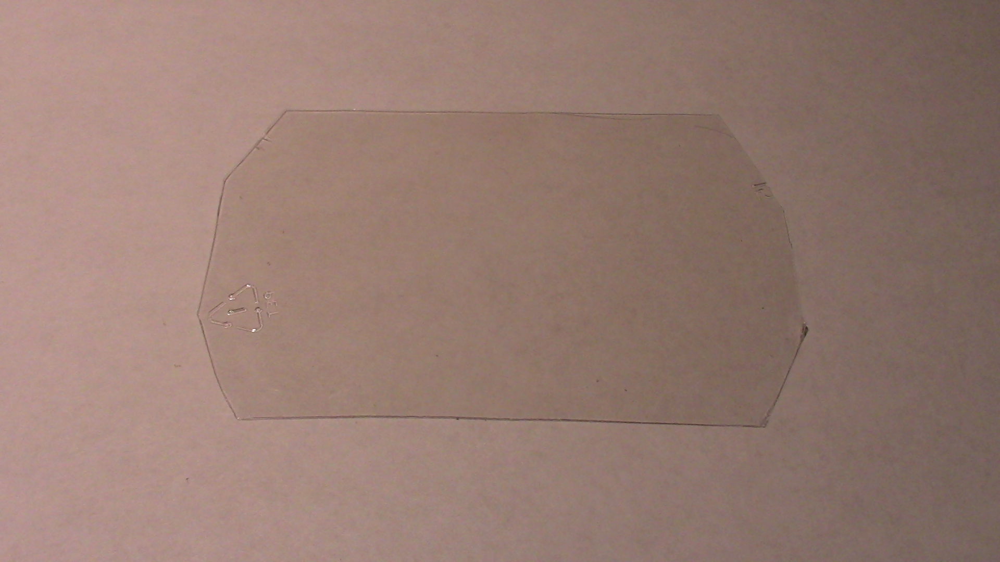The screws used have a 4mm stalk with a 3mm diameter. The head of the screws are about 1mm think with a 5mm diameter.
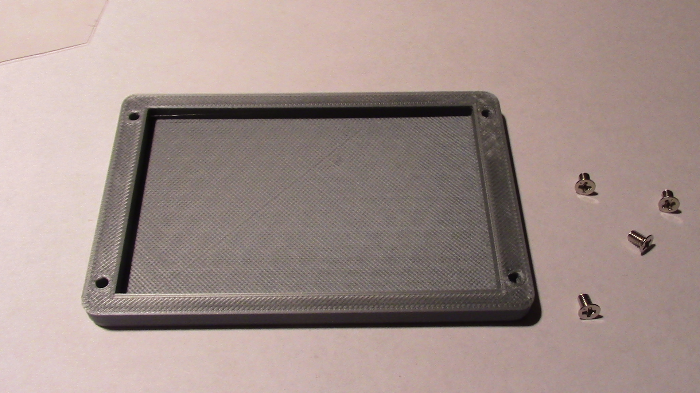Here is the PDA in the back of the case.
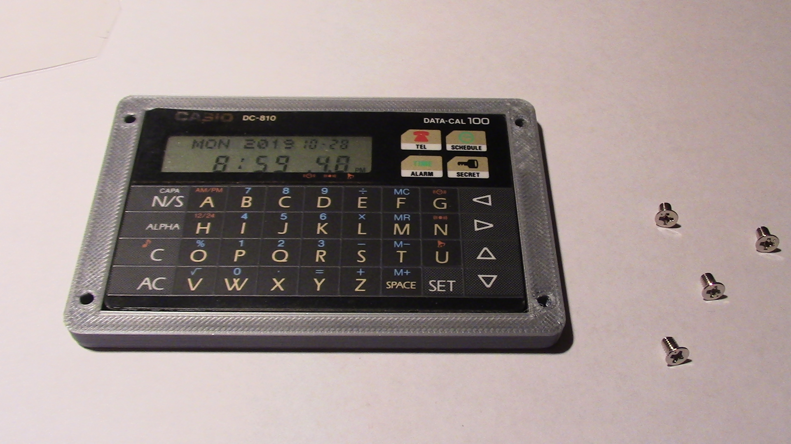Here is the PDA in the back of the case with the clear plastic piece on top. The clear plastic is difficult to see in this picture.
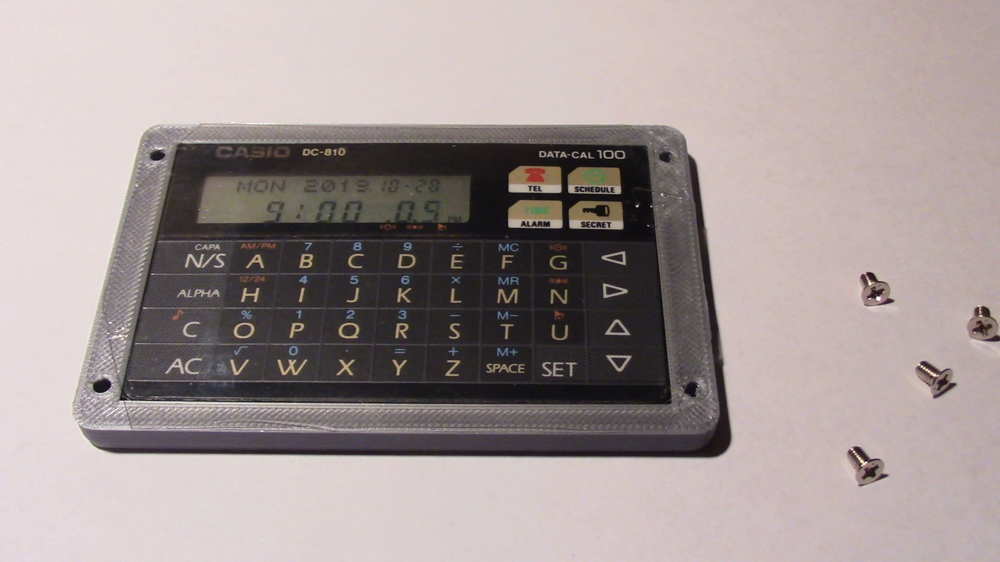Here, the front face has been added.
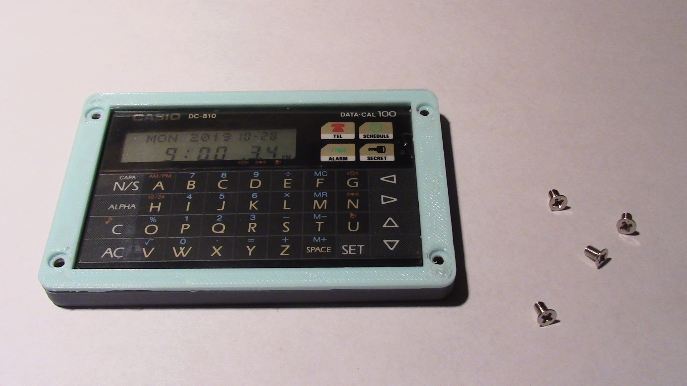Here is the fully assembled case.